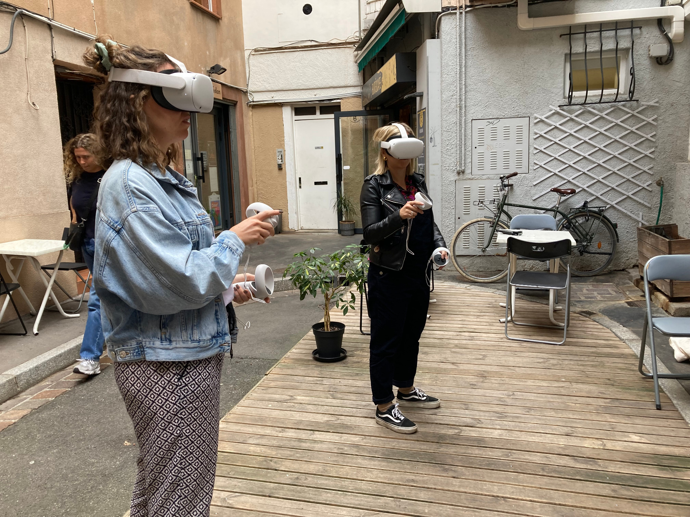
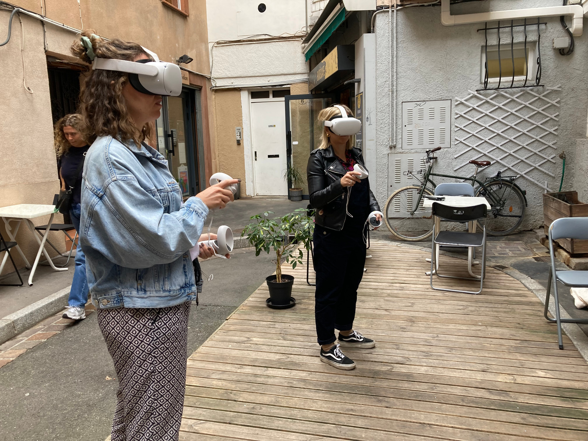

ImmunEscape
Explorez votre immunité en jouant !
Explorez votre immunité en jouant !
ImmunEscape est un escape game scientifique, développé à Toulouse, pour faire découvrir les mécanismes de l’immunité de manière ludique et immersive. En salle ou en réalité virtuelle, vivez une aventure inspirée de la recherche biomédicale.
Élèves, étudiants, enseignants, patients, curieux ou passionnés : le jeu s’adapte à tous les publics et s’intègre dans des contextes variés comme la formation, la médiation scientifique ou l’éducation thérapeutique.
Pour découvrir comment votre corps se défend, pour mieux comprendre la vaccination, ou simplement pour passer un moment captivant autour d’un jeu conçu par des scientifiques passionnés.
Contactez-nous pour réserver une session, planifier un événement ou intégrer le jeu à vos programmes pédagogiques.
Nous contacterAccédez à la fiche complète du jeu à partager avec vos publics.
📄 Télécharger la fiche (PDF)
 
